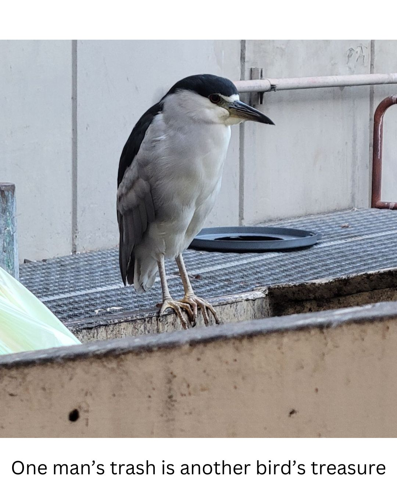

These night herons were hanging out on 10th St. next to Webster St. across the street from Shan Dong in the hopes that they would get some noodles being thrown out after closing time. But then, as I was walking home with lefover pizza, the night herons must have smelled it because a handful of them flew towards me as I was walking by. There are 14 night herons in this video, though most are hard to spot initially.
Black-crowned Night Herons are small herons with rather squat, thick proportions. They have thick necks, large, flat heads, and heavy, pointed bills. The legs are short and, in flight, barely reach the end of the tail. The wings are broad and rounded. They're a social bird and normally roost in groups called rookeries. Black-crowned Night Herons often spend their days perched on tree limbs or concealed among foliage and branches. They forage in the evening and at night, in water, on mudflats, and on land. In flight they fold their head back against their shoulders, almost making the neck disappear. They have a funny sqwuak call is very distinctive, heard here. They hae a wide habitat and can be found in both North America and Europe. They enjoy marshes, lakes, and any dumpster near a body of water.
| Subspecies: | N. n. nycticorax | N. n. hoactli | N. n. obscurus | N. n. falklandicus |
|---|---|---|---|---|
| Named By: | Linnaeus, 1758 | Gmelin, 1789 | Bonaparte, 1855 | Hartert, 1914 |
| Range: | Eurasia south to Africa, east Asia, Philippines, and Indonesia | southern Canada to northern Argentina and northern Chile; Hawaii | central and southern Chile and southwest Argentina | Falkland Islands |
| Onomatopoeia Names | kowak-malam, vạc, kwak | hoactli | waqwa | Quark |
| Diet: | small mammals, fish, crustaceons, insects, amphibeans, lizards, small birds, trash, etc | |||
| Habitat: | marshes, rivers, ponds, mangrove swamps, urban canopies, rice fields, and tidal flats. | |||
| Black-Crowned Night Heron Wikipedia | ||||
Oakland is home to the largest black-crowned night heron rookery in the San Francisco Bay Area. In 2019, after two years of campaigning, a group of elementary school kids got the city of Oakland to name the black-crowned night heron the official bird of Oakland. In the heart of the densest part of Oakland lies Lake Merritt. While called a lake, this is an ancient tidal lagoon that in 1870 was officially designated a wildlife refuge, the first in the United States. Lake Merritt to this day attracts dozens of species of birds, sharks, sting rays, a variety of fish, and recently, salmon that were trying to get to the streams that have been choked off for decades. As a result of this ancient tidal lagoon being in Downtown Oakland, it also means that Downtown Oakland became home to several large night heron rookeries. The children that went to the elementary school next to one of these rookeries led the campaign that got the black-crowned night heron named the official bird of Oakland.
Neighborhoods that Night Herons Frequent in Oakland
At least as of late 2024, while night herons could be found all across Oakland, they were most predominately roosting in the Downtown area, predominately Chinatown.
Oakland has had a lot of struggles in recent decades, one of which was underinvestment, particularly in the Downtown Neighborhoods. Downtown Oakland went many decades with little to no new construction, allowing empty lots to litter the neighborhood. What caused some urban blight also provided a safe place for the night herons to roost. However, in the past decade, as the Bay Area tech boom led to more competition for the limited housing resources, developers finally started building some new apartment buildings in the city. While the new buildings are a net positive for the neighborhood, it has come at a cost to the night herons. Many of the new buildings required trees that were used for roosting in to come down. While efforts were made by local bird rescues to encourage the birds to roost in trees closer to Lake Merritt, the birds just kept relocating to trees near their old ones, leaving just a handful of trees left that they prefer for roosting.
The Oakland Zoo in partnership with the Audobon Society started a rescue project to help the night herons of Oakland. During fledgling season, Oakland Zoo staff walk the streets surrounding the birds' rookery every day, looking for fallen and injured birds. Injured young birds are carefully captured for transport to Oakland Zoo. On their rounds, the Heron Rescue Team connects with the community about the program. Injured birds are taken to Oakland Zoo for intermediary medical evaluation and treatment. Oakland Zoo then provides transport to International Bird Rescue, a world-leading wild water bird rehabilitative care organization. The rehabilitated birds are then released into safe and appropriate local habitats, including the Bay shoreline in Oakland. In 2022, the Heron Rescue Team rescued 122 night herons.

H5N1, commonly referred to as the Bird Flu, has been decimating bird populations across the country, both domestic and wild. Unfortunately, Lake Merritt and the broader San Francisco Bay Area region has not been immune to this. Recently, there have been dead birds spotted near the lake that have tested positive for H5N1. As the Downtown Oakland night herons roost in crowded trees along with egrets, if just one or two birds show up with the flu to a rookery, it has the potential to wipe out dozens of birds. Night herons have been shown to be susceptible to the bird flu and it can kill them after only 4-5 days. While I have not found any articles explicitly mentioning local night herons and the bird flu, there has been a noticable drop in the population in the neighborhood. Their roosting trees have been noticably empty and quieter and their late night sqwuaks have been less frequent. However, it has been a colder winter than normal here in Oakland, so I am holding out hope that as things start to warm up again, we will start seeing more come back to the neighborhood. Night herons are a resilient species, so it is too early to count them out, but the bird flu trends are still very concerning.
Shortly after moving to Oakland in 2012, late one night I heard the night heron sqwuak and was confused by this weird noise that had just reverberated through the neighborhood. Weeks later, I would be walking through Chinatown around sunset, and see these weird birds hanging out on the sidewalks and realize that these dinosaurs were part of the neighborhood. Over the years, I have grown especially fond of these birds, so much so that last year I started an instagram account called Night Herons of Oakland that has become an appreciation page for the night herons in the city I call home. I feel very protective of these birds and I hope that they can continue to co-exist with us humans that live here, especially since they were here first. Since this assignment was photo based, I felt more comfortable using photos that are mine rather than snagging some copyrighted photos off of google, hence why this topic got changed from my original one. But also, I wanted to share a little bit about these cool birds, who hopefully will be returning to the neighborhood soon. I miss seeing them around town at sunset and on my way to BART in the mornings.